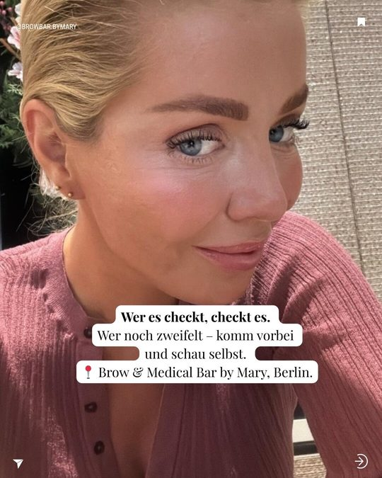

Ästhetik mit fachlicher Expertise in Berlin-Charlottenburg
Brow & Medical Bar by Mary verbindet fachliche Kompetenz mit persönlicher Beratung. Der Einstieg beginnt mit einem ehrlichen Gespräch — nicht mit einem Versprechen.

Behandlungen
Fachliche Ästhetik — individuell beraten, sorgfältig durchgeführt
Jede Behandlung wird vorab fachlich eingeschätzt. Wir empfehlen nur, was zu Hautbild, Ausgangslage und Ziel passt.
Injectables
Botox
Faltenbehandlung mit Botulinumtoxin. Stirn, Zornesfalte, Krähenfüße — dosiert und natürlich.
Filler / Hyaluronsäure
Volumenaufbau und Konturierung. Wangen, Kinn, Jawline, Nasolabialfalte — nach fachlicher Analyse.
Filler-/PMU-Korrektur Beratung
Diskrete Beratung zur Auflösung oder Korrektur früherer Filler- und Permanent-Make-up-Behandlungen.
Lippen aufspritzen
Natürliches Lippenvolumen mit Hyaluronsäure. Russian Lips, Classic oder Natural — je nach Gesichtsanatomie.
Botox für Männer Neu
Diskrete Faltenbehandlung für Männer. Zurückhaltend geplant, unkompliziert erklärt.
Sculptra Premium
Kollagenstimulierende Behandlung mit Poly-L-Milchsäure — als langfristig angelegter Plan.
Fadenlifting Premium
Lifting ohne OP mit PDO-Fäden. Für ausgewählte Indikationen nach individueller Beratung.
Skincare & Gesicht
HydraFacial
Mehrstufige Hautbehandlung — Reinigung, Peeling, Extraktion und Hydration.
Microneedling
Kontrollierte Mikroverletzungen regen die hauteigene Regeneration an. Mit oder ohne Wirkstoff-Infusion.
Mesotherapie
Gezielte Wirkstoff-Injektionen in die Haut — für Revitalisierung und Feuchtigkeit.
Potenza RF Microneedling
Microneedling kombiniert mit Radiofrequenz-Energie für verstärkte Kollagenstimulation.
Radiofrequenz-Behandlung
Hautstraffung durch kontrollierte Wärmeenergie — nicht-invasiv, ohne Ausfallzeit.
Permanent Make-up
Augenbrauen, Lippen, Wimpernkranz — dauerhafte Pigmentierung mit natürlichem Ergebnis.
Laser & Körper
Laserbehandlung
IPL, Diodenlaser, Nd:YAG — Haarentfernung, Hautverjüngung, Gefäßbehandlung.
Laser für dunkle Haut Spezialisiert
Laserberatung und geeignete Verfahren für Fitzpatrick IV–VI mit PicoPlus und Clarity II.
Pigmentflecken entfernen
Laserbehandlung bei Altersflecken, Sonnenflecken und Hyperpigmentierung.
Tattooentfernung
Tattooentfernung mit PicoPlus-Laser — auch für mehrfarbige Tattoos.
PicoPlus Berlin Laser
Geräte- und Hauttyp-orientierte Beratung für Tattoo, Pigment und Laserplanung.
Fettwegspritze
Nicht-invasive Fettreduktion durch Injektionsbehandlung — nach fachlicher Indikationsstellung.
Kombi-Behandlungen Premium
Mehrere Treatments in einem Termin — individuell abgestimmt, transparenter Paketpreis.

Über Mary
Eine spezialisierte Ästhetik-Praxis — kein Standard-Kosmetikstudio
Der Unterschied liegt in der medizinischen Grundlage. Jede Behandlung wird fachlich eingeschätzt und begleitet. Das bedeutet: fundierte Diagnostik vor dem ersten Eingriff, realistische Einschätzung statt leerer Versprechen, und ein Behandlungsplan, der zu Ihrer individuellen Ausgangslage passt.
Mary ist Heilpraktikerin mit langjähriger Erfahrung in der Ästhetik. Sie kombiniert medizinisches Fachwissen mit einem Blick für natürlich wirkende Ergebnisse — und berät ehrlich, auch wenn das bedeutet, von einer Behandlung abzuraten.
Mehr über Mary erfahrenHäufige Fragen
Vor Ihrem ersten Termin
Was unterscheidet Brow & Medical Bar von einem Kosmetikstudio?
Brow & Medical Bar ist eine spezialisierte Ästhetik-Praxis. Alle invasiven Behandlungen werden von oder unter Aufsicht einer Heilpraktikerin durchgeführt. Das bedeutet fachliche Analyse, fundierte Beratung sowie sorgfältige Aufklärung und Durchführung.
Muss ich mich auf eine Behandlung festlegen?
Nein. Jeder erste Termin beginnt mit einem Beratungsgespräch. Erst nach fachlicher Einschätzung wird gemeinsam entschieden, welche Behandlung sinnvoll ist — oder ob überhaupt eine empfohlen wird.
Wie buche ich einen Termin?
Telefonisch unter 030 56005625, über Instagram (@browbar.bymary) oder direkt online über unser Buchungssystem.
Wo befindet sich die Praxis?
In der Bleibtreustraße 18, 10623 Berlin-Charlottenburg — gut erreichbar vom Savignyplatz und Kurfürstendamm.
Beratungstermin vereinbaren
Rufen Sie uns an oder schreiben Sie uns auf Instagram.
030 56005625 anrufen